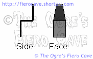

Go Home
Site Map
Go Home
Site Map
Sitting around...
Alternate Seats/Upholstery
There are many threads about this... (I'll add to this as time permits.)
- Thread 1 This one shows some nice Sunbird seats. These look nice and they shouldn't cost allot from most salvage yards.
- Mr. Mikes leather upholstery kits. Really nice looking stuff if you have the money.
Seat Migration
Yes, the OEM Fiero seat bottoms and/or bottom covers can be moved from one side to the other. No, the holes from the old hardware won't show.
The Cover on the seat back can be moved from one side to another but the seat back itself can't.
It's not a difficult job. I'm not going to explain it in detail. Take your time with them and you'll easily see how it all works. (This works for allot of factory seats.)
There is one catch when moving seat bottoms...
You may need to trim the foam a bit or the recliner latch will bind. I ran into this putting a passenger side bottom section with a driver side seat back. I expect the same can happen going the other direction.
If this happens:
- Separate the seat back from the bottom.
- Remove the outboard seat track.
- Remove the hog rings holding the outboard side of the seat cover in place.
- Pull out the seat cover and look at the area where the recliner mechanism bolts to the seat.
- You will see some foam over hanging the metal framing.
- Cut away the foam from the back corner of the seat to the front bolthole for the recliner hardware. (I prefer scissors. If you use a knife be very careful. One slip and you could go right thru the seat cover.)
- Refasten the seat cover. You can use nylon ties if you don't have hog rings. I use thin ties and wrap them around once or twice before closing them.
You aren't finished yet:
Look at the recliner mechanism on the side facing inward.
See the thick black plastic "flap" that protects the seat from the metal? If that plastic is deformed and hanging the latch, carefully warm it and bend it out of the way. Don't remove it.
I let the seat back lie on the workbench. You don't need allot of heat. Be careful you just want it to soften, not melt. I used a propane torch set to its lowest possible flame. A heat gun or even a hair dryer would work. Make sure you don't heat the seat cover!
Once it softens hold it where needed until it cools.
Now your seats shouldn't bind anymore.
The handle fell off
The plastic handle commonly falls off the recliner mechanism. The original version simply falls off. The later version has a pin near the back and either the pin breaks or the handle does.
In my case handle tore out where the pin goes thru. I fixed it with a short sheet metal screw and a washer. This will work for a missing pin or an original handle that had no pin.
- Separate the seat back from the bottom.
- If present, remove the plastic pin that holds the handle on the arm.
- Insert a screw to hold the handle on. (If you may have the original style handle, you have to drill a hole.)
- File off any burrs on the screw so they won't damage the seat covers.
- Reassemble and install the seat.
If your handle doesn't have a hole, you'll have to separate the 2 halves of the seat to drill one. The hole will go near the back of the lever on the side facing the seat. You'll see where. There is really only one spot you can drill both the lever and cover and not hit anything.
To avoid the handle falling off, only pull it by grabbing under the tip of the level. The plastic handles aren't very well designed. They flex quite allot and will break again if you keep pulling on the side of them.
The Trim fell off
The trim over the hinge is a pain. It was rather poorly done and begged to be broken. Since one screw faces down under the mechanism, you'll have to pull the seat out to fix this.
Screw holes
If you have all the pieces of the trim, glue it back together with plastic welding epoxy. Sand the area around the parts and build up some epoxy to make the trim stronger.
For more strength I used some left over screws from another interior project, the hex head ones with a washer like those from the dash and console. Pan head screws would also work. With the way the seat is installed, the heads don't show.
If the screw bosses are too damaged to glue together, make some new spacers. You can make the spacers from almost anything.
Hook
One spot on the trim simply hooks to the recliner hardware. The hook goes into a loop by the big spring on the recliner hardware.
If the hook is broken you'll have to make something and glue it to the trim. (Don't install the trim without the hook. You'll just end up breaking it even more.)
The metal you choose needs to be very stiff. I used regular heavy sheet metal. It seemed OK at first but turned out to be too soft. Some type of spring or tool metal might have worked better.
Cut and bend the new hook to shape then glue it under the spot for the original hook that broke off. The new hook should look something like the drawing below. (Use plastic welding epoxy.)

Sand the plastic and new metal hook to remove any contamination and give the glue something to stick to.
If your new hook turn out too soft and bends, like mine did, then fold it over the loop and glue the end to the plastic with more epoxy. I also built up some epoxy around that area to make it even stronger. (Don't do this unless you are sure you won't need to remove the trim anytime soon! The only way to get it off will be cutting the hook.)
Why does the trim break?
The trim takes a tremendous pounding but that isn't the only problem. When I was repairing my trim, I noticed the seat back was pushing against the trim pretty good. Between getting banged around, so-so design/installation, and the foam pushing on it... It's a wonder it lasts as long as it does.
The foam problem is easy to fix, just tear a way a bit of the foam that covers the recliner mechanism under the seat cover. I tore off about 1-1.5 inches of the foam flap. That took all that pressure off the trim. You don't even need to remove the seat cover.